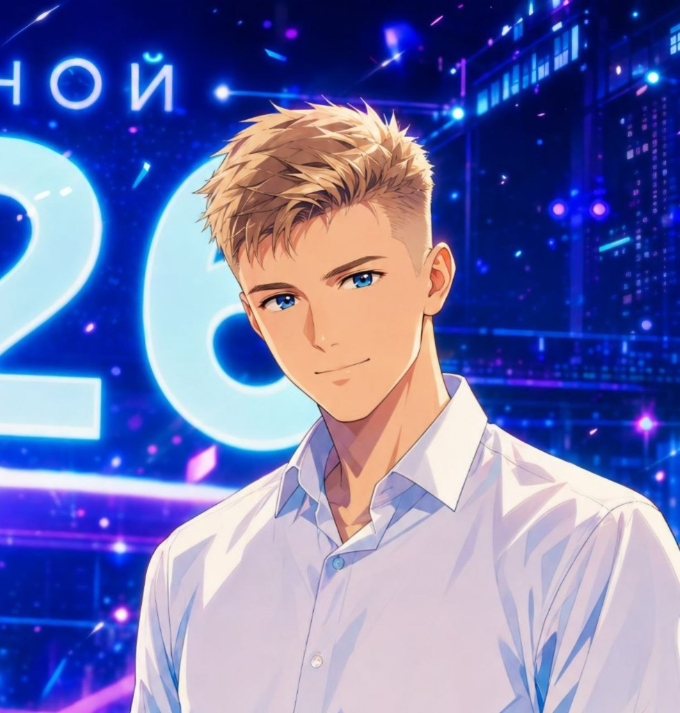

ИРЦ БЖД
июль 2026 — октябрь 2026DevOps-инженер
Автоматизация, инфраструктура и сопровождение в контуре Белорусской железной дороги.

Беларусь · DevOps & Backend
Собираю платформы, которые не мешают команде: CI/CD, Kubernetes, VPN и мониторинг — плюс Java, Go и Python, когда нужна доставка до кода.
Мне 21. Работаю как DevOps с backend-задачами: от кластера и доступов до миграций сервисов и парсеров. Открыт к задачам до октября 2026.
Сейчас в двух компаниях: ИРЦ БЖД и Balinasoft. В одной — автоматизация и инфраструктура для большой организации, в другой — полный цикл платформы: GitOps, закрытые контуры, observability и код.
Люблю, когда пайплайн предсказуем, тестовый контур закрыт за VPN, а мониторинг отвечает раньше, чем пользователь.
Kubernetes, ВМ, полный CI/CD и выкат через Argo CD.
NetBird VPN, политики, закрытые тестовые окружения.
Registry, Harbor + Trivy, сборки Android и desktop.
Java / Go / Python: миграции, оптимизации, сервисы под нагрузку.
2025–2026: от платформы и VPN до миграций Java и проектирования Go-микросервисов.
DevOps-инженер
Автоматизация, инфраструктура и сопровождение в контуре Белорусской железной дороги.
DevOps-инженер с выполнением backend-задач
«Автоматизация — это когда код делает работу за тебя, а ты занимаешься более интересными вещами»Рома Пригодич · Беларусь
VMware vCenter / ESXi, Grafana Stack, NetBird — инструменты, с которыми живу каждый день. Удобнее всего писать в Telegram; обычно отвечаю в течение дня.
Инфра, observability, языки и платформы сборки — без лишней витрины.
Открыт к диалогу по DevOps, инфраструктуре и интересным задачам.